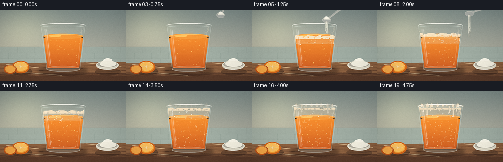
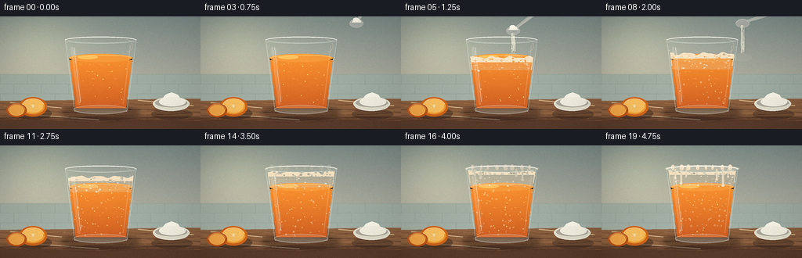
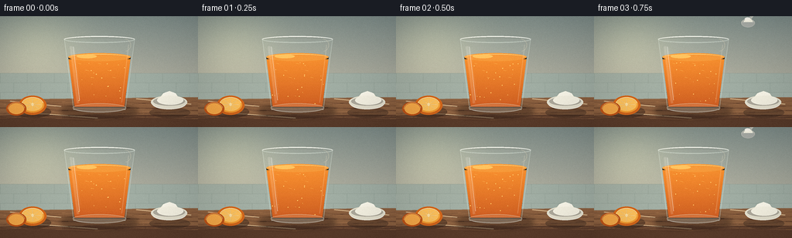

CODING AGENTS AS PIXEL WORLD MODELS
traex/DeepSeek-V4.1-Flash · phygen_150
点击播放 · 原生 RGB 像素
逐轮保存的候选
回放视频、检查图与代码变化。
每份候选均可单独播放。实际图片检查记录在下方工具轨迹中。
候选 01播放与检查图
点击播放 · 原生 RGB 像素

展开代码变化
--- 上一保存版本
+++ 本次保存版本
@@ -0,0 +1,528 @@
+from pathlib import Path
+import math
+
+import numpy as np
+from PIL import Image, ImageDraw, ImageFilter
+
+import artifact_io
+
+
+W, H, N, FPS = 256, 144, 20, 4
+SS = 4
+CW, CH = W * SS, H * SS
+CASE_DIR = Path(__file__).resolve().parent
+
+
+def S(v):
+ return int(round(v * SS))
+
+
+def box(values):
+ return tuple(S(v) for v in values)
+
+
+def rgba(color, alpha=255):
+ return tuple(color) + (alpha,)
+
+
+def lerp(a, b, t):
+ return a + (b - a) * t
+
+
+def smoothstep(t):
+ t = max(0.0, min(1.0, t))
+ return t * t * (3.0 - 2.0 * t)
+
+
+def make_background():
+ """A softly lit kitchen counter with a tiled backsplash."""
+ yy, xx = np.mgrid[0:CH, 0:CW].astype(np.float32)
+ x = xx / CW
+ y = yy / CH
+
+ # Warm, low-contrast wall with a gentle pool of window light on the left.
+ top = np.array([128, 143, 140], dtype=np.float32)
+ bottom = np.array([185, 181, 164], dtype=np.float32)
+ blend = np.clip((y - 0.02) / 0.72, 0, 1)[..., None]
+ rgb = top * (1 - blend) + bottom * blend
+ glow = np.exp(-(((x - 0.18) / 0.23) ** 2 + ((y - 0.27) / 0.34) ** 2))
+ rgb += glow[..., None] * np.array([30, 28, 18], dtype=np.float32)
+
+ # Fine wall texture, deterministic and restrained.
+ rng = np.random.default_rng(27)
+ texture = rng.normal(0, 3.0, (CH, CW, 1)).astype(np.float32)
+ texture = np.repeat(texture, 3, axis=2)
+ rgb = np.clip(rgb + texture, 0, 255)
+ image = Image.fromarray(rgb.astype(np.uint8), "RGB").convert("RGBA")
+ draw = ImageDraw.Draw(image, "RGBA")
+
+ # Backsplash: pale celadon tiles with narrow warm grout lines.
+ splash_top, splash_bottom = S(74), S(111)
+ draw.rectangle(box((0, 74, W, 111)), fill=(151, 168, 158, 255))
+ for row in range(3):
+ y0 = splash_top + row * S(12.5)
+ y1 = splash_top + (row + 1) * S(12.5)
+ shade = 158 + row * 2
+ draw.rectangle((0, int(y0), CW, int(y1)), fill=(shade, shade + 14, shade + 5, 255))
+ draw.line((0, int(y0), CW, int(y0)), fill=(128, 142, 134, 105), width=max(1, S(0.35)))
+ offset = 0
+ for row in range(3):
+ y0 = splash_top + row * S(12.5)
+ y1 = splash_top + (row + 1) * S(12.5)
+ for col in range(-1, 9):
+ x0 = S(col * 35 + (17.5 if row % 2 else 0))
+ draw.line((x0, int(y0), x0, int(y1)), fill=(126, 141, 132, 95), width=max(1, S(0.35)))
+
+ # Countertop: warm walnut plane and darker front edge.
+ counter_top = S(108)
+ draw.rectangle((0, counter_top, CW, CH), fill=(111, 75, 52, 255))
+ draw.polygon(
+ [(0, counter_top), (CW, S(105)), (CW, S(128)), (0, S(131))],
+ fill=(139, 96, 64, 255),
+ )
+ draw.rectangle((0, S(128), CW, CH), fill=(91, 60, 43, 255))
+ draw.line((0, S(128), CW, S(127)), fill=(170, 126, 86, 150), width=max(1, S(0.6)))
+
+ # Wood grain: long, shallow curves in slightly lighter and darker brown.
+ for i in range(15):
+ base_y = 111 + i * 1.6 + (i % 3) * 0.4
+ points = []
+ for k in range(33):
+ px = k * 8
+ py = base_y + 1.7 * math.sin(k * 0.31 + i * 1.7) + 0.45 * math.sin(k * 0.9 + i)
+ points.append((S(px), S(py)))
+ color = (163, 115, 77, 55) if i % 2 else (83, 52, 36, 58)
+ draw.line(points, fill=color, width=max(1, S(0.45)))
+
+ # A few soft reflected highlights on the polished counter.
+ for x0, y0, x1, y1, alpha in [
+ (13, 110, 79, 117, 20),
+ (176, 107, 247, 114, 18),
+ (49, 126, 126, 132, 13),
+ ]:
+ draw.line(box((x0, y0, x1, y1)), fill=(255, 225, 178, alpha), width=max(1, S(1.1)))
+
+ image = image.filter(ImageFilter.GaussianBlur(0.35 * SS))
+ return image
+
+
+def draw_orange_halves(base):
+ """Small orange halves at the left edge add context without stealing focus."""
+ layer = Image.new("RGBA", base.size, (0, 0, 0, 0))
+ d = ImageDraw.Draw(layer, "RGBA")
+
+ # Contact shadow.
+ d.ellipse(box((19, 116, 66, 132)), fill=(47, 30, 22, 90))
+ # Peel.
+ d.ellipse(box((24, 103, 60, 128)), fill=(211, 102, 27, 255))
+ d.ellipse(box((27, 105, 57, 125)), fill=(244, 156, 50, 255))
+ # Flesh.
+ d.ellipse(box((29, 106, 55, 123)), fill=(255, 194, 93, 255))
+ d.arc(box((28, 105, 56, 124)), 192, 348, fill=(255, 231, 175, 235), width=S(0.8))
+ center = (S(42), S(114.5))
+ for angle in range(0, 360, 45):
+ a = math.radians(angle)
+ end = (S(42 + 10.5 * math.cos(a)), S(114.5 + 7.0 * math.sin(a)))
+ d.line([center, end], fill=(255, 224, 159, 195), width=max(1, S(0.45)))
+ d.ellipse(box((40.5, 112.5, 43.5, 116.5)), fill=(255, 226, 164, 245))
+ # A second, partly cropped half.
+ d.ellipse(box((8, 111, 34, 129)), fill=(190, 84, 24, 255))
+ d.ellipse(box((11, 113, 31, 127)), fill=(247, 169, 72, 255))
+ d.arc(box((10, 112, 32, 128)), 175, 354, fill=(255, 216, 139, 210), width=S(0.55))
+
+ base.alpha_composite(layer)
+
+
+def draw_soda_bowl(base):
+ """A small ceramic dish of baking soda at the right edge."""
+ layer = Image.new("RGBA", base.size, (0, 0, 0, 0))
+ d = ImageDraw.Draw(layer, "RGBA")
+ d.ellipse(box((193, 118, 246, 132)), fill=(43, 29, 23, 80))
+ d.ellipse(box((195, 103, 242, 120)), fill=(230, 226, 208, 255))
+ d.ellipse(box((198, 105, 239, 116)), fill=(176, 172, 159, 255))
+ # Powder heap.
+ d.polygon(
+ [(S(204), S(109)), (S(211), S(100)), (S(219), S(97)), (S(227), S(100)), (S(233), S(109))],
+ fill=(245, 242, 225, 255),
+ )
+ d.ellipse(box((210, 98, 228, 108)), fill=(253, 250, 237, 255))
+ d.ellipse(box((203, 103, 237, 115)), fill=(248, 245, 230, 255))
+ d.arc(box((196, 104, 241, 121)), 12, 168, fill=(255, 255, 247, 220), width=S(0.9))
+ d.arc(box((195, 104, 242, 121)), 10, 171, fill=(150, 143, 128, 125), width=S(0.35))
+ base.alpha_composite(layer)
+
+
+def cup_half_width(y):
+ # Linear taper from the 45.5 px rim to a 33.5 px base.
+ return lerp(45.5, 33.5, (y - 29.0) / (121.0 - 29.0))
+
+
+def cup_left(y):
+ return 128.5 - cup_half_width(y)
+
+
+def cup_right(y):
+ return 128.5 + cup_half_width(y)
+
+
+def draw_glass_shadow(base):
+ layer = Image.new("RGBA", base.size, (0, 0, 0, 0))
+ d = ImageDraw.Draw(layer, "RGBA")
+ d.ellipse(box((78, 114, 178, 132)), fill=(45, 29, 22, 112))
+ d.ellipse(box((86, 118, 169, 129)), fill=(40, 25, 20, 92))
+ layer = layer.filter(ImageFilter.GaussianBlur(3.0 * SS))
+ base.alpha_composite(layer)
+
+
+def liquid_mask(frame_index):
+ mask = Image.new("L", (CW, CH), 0)
+ d = ImageDraw.Draw(mask)
+ surface = 53.0
+ points = [
+ (S(cup_left(surface) + 2.2), S(surface)),
+ (S(cup_right(surface) - 2.2), S(surface)),
+ (S(cup_right(118) - 2.0), S(118)),
+ (S(cup_left(118) + 2.0), S(118)),
+ ]
+ d.polygon(points, fill=255)
+ d.ellipse(box((cup_left(surface) + 2.2, surface - 5.2, cup_right(surface) - 2.2, surface + 5.2)), fill=255)
+ return mask
+
+
+def draw_juice(base, frame_index):
+ """Orange juice with a luminous surface and subtle internal motion."""
+ layer = Image.new("RGBA", base.size, (0, 0, 0, 0))
+ d = ImageDraw.Draw(layer, "RGBA")
+ surface = 53.0
+ top_y = 56
+ bottom_y = 118
+ for y in range(top_y, bottom_y):
+ q = (y - top_y) / (bottom_y - top_y)
+ r = int(lerp(244, 206, q))
+ g = int(lerp(132, 82, q))
+ b = int(lerp(31, 19, q))
+ xl, xr = cup_left(y) + 2.0, cup_right(y) - 2.0
+ d.line((S(xl), S(y), S(xr), S(y)), fill=(r, g, b, 255), width=max(1, SS))
+
+ # Liquid top: orange ellipse with a pale reflected window strip.
+ d.ellipse(box((cup_left(surface) + 2.0, surface - 5.2, cup_right(surface) - 2.0, surface + 5.2)),
+ fill=(244, 144, 43, 255))
+ d.arc(box((cup_left(surface) + 3.2, surface - 4.1, cup_right(surface) - 3.2, surface + 4.1)),
+ 184, 354, fill=(255, 201, 106, 210), width=S(0.7))
+ d.ellipse(box((99, 49.5, 125, 54.4)), fill=(255, 188, 83, 85))
+
+ # Bright internal highlights and slow pulp streaks.
+ phase = frame_index / max(1, N - 1)
+ for j in range(6):
+ x0 = 101 + j * 9 + 2.0 * math.sin(j * 1.9 + phase * 2.3)
+ y0 = 61 + (j % 3) * 9
+ d.line(box((x0, y0, x0 + 3.4, y0 + 0.7)), fill=(255, 178, 70, 75), width=max(1, S(0.5)))
+
+ # A small amount of orange pulp.
+ rng = np.random.default_rng(120 + frame_index)
+ for _ in range(22):
+ x = rng.uniform(cup_left(75) + 5, cup_right(75) - 5)
+ y = rng.uniform(60, 114)
+ r = rng.uniform(0.22, 0.72)
+ d.ellipse(box((x - r, y - r, x + r, y + r)), fill=(255, 192, 91, 85))
+
+ layer.putalpha(liquid_mask(frame_index))
+ base.alpha_composite(layer)
+
+
+def foam_top_for_frame(frame_index):
+ t = frame_index / (N - 1)
+ if t < 0.20:
+ return 53.0
+ growth = smoothstep((t - 0.20) / 0.66)
+ return lerp(52.7, 31.8, growth)
+
+
+def foam_width_at(y):
+ return cup_half_width(y) - 2.2
+
+
+def draw_foam(base, frame_index):
+ t = frame_index / (N - 1)
+ top_y = foam_top_for_frame(frame_index)
+ if top_y >= 52.4:
+ return
+
+ layer = Image.new("RGBA", base.size, (0, 0, 0, 0))
+ d = ImageDraw.Draw(layer, "RGBA")
+ rng = np.random.default_rng(430 + frame_index)
+
+ # Main cream-colored foam cap, with a softly irregular crown.
+ left = 128.5 - foam_width_at(top_y)
+ right = 128.5 + foam_width_at(top_y)
+ crown = []
+ steps = 28
+ for k in range(steps + 1):
+ u = k / steps
+ xx = lerp(left, right, u)
+ ripple = 1.25 * math.sin(u * math.pi * 7.0 + frame_index * 0.65)
+ ripple += 0.65 * math.sin(u * math.pi * 13.0 - frame_index * 0.42)
+ crown.append((S(xx), S(top_y + ripple)))
+ body_y = min(68.0, top_y + 16.0)
+ body = crown + [
+ (S(cup_right(body_y) - 2.2), S(body_y)),
+ (S(cup_left(body_y) + 2.2), S(body_y)),
+ ]
+ d.polygon(body, fill=(244, 224, 192, 252))
+
+ # Orange shadows under the foam give it volume.
+ for y in range(int(top_y + 7), int(min(69, top_y + 21))):
+ q = (y - top_y) / max(1.0, min(69, top_y + 21) - top_y)
+ shade = (228, 187, 139, int(42 + q * 55))
+ d.line((S(cup_left(y) + 3), S(y), S(cup_right(y) - 3), S(y)),
+ fill=shade, width=max(1, SS))
+
+ # Many bubbles: tiny, clustered, and scale-appropriate at final resolution.
+ bubble_count = 46 + int(52 * smoothstep((t - 0.22) / 0.68))
+ for _ in range(bubble_count):
+ y = rng.uniform(top_y + 1.0, min(69.5, top_y + 21.0))
+ half = foam_width_at(y) - 2.8
+ x = 128.5 + rng.uniform(-half, half)
+ radius = rng.uniform(0.35, 1.75)
+ alpha = int(rng.uniform(85, 190))
+ if rng.random() < 0.55:
+ d.ellipse(box((x - radius, y - radius * 0.72, x + radius, y + radius * 0.72)),
+ fill=(255, 250, 236, alpha), outline=(178, 136, 96, min(180, alpha + 30)),
+ width=max(1, S(0.25)))
+ else:
+ d.ellipse(box((x - radius, y - radius * 0.7, x + radius, y + radius * 0.7)),
+ fill=(220, 174, 123, alpha // 2))
+
+ # Rim foam and spillover appear near the end.
+ spill = smoothstep((t - 0.62) / 0.38)
+ if spill > 0:
+ rim_y = 29.0
+ d.ellipse(box((80.8, 25.0, 176.2, 34.0)), fill=(247, 230, 203, int(90 * spill)))
+ d.arc(box((82.0, 25.5, 175.0, 35.0)), 188, 352,
+ fill=(255, 246, 224, int(225 * spill)), width=S(1.0 + 0.8 * spill))
+ for k in range(8):
+ x = 91 + k * 10.4 + 1.2 * math.sin(k * 2.2)
+ r = 1.7 + 1.4 * (0.5 + 0.5 * math.sin(k + frame_index))
+ d.ellipse(box((x - r, 25.4 - 0.4 * r, x + r, 29.8 + 0.7 * r)),
+ fill=(250, 233, 207, int(225 * spill)),
+ outline=(211, 175, 134, int(125 * spill)), width=max(1, S(0.25)))
+
+ # Creamy drips down the outside of the glass.
+ for x, length, width in [
+ (94.0, 10.0, 2.0), (101.5, 16.5, 2.6), (108.0, 7.5, 1.5),
+ (147.0, 12.0, 2.2), (155.0, 20.0, 2.8), (161.5, 8.5, 1.7),
+ ]:
+ y_end = 31.0 + length * spill
+ d.line(box((x, 30.0, x, y_end)), fill=(245, 224, 195, int(210 * spill)),
+ width=max(1, S(width)))
+ d.ellipse(box((x - width * 0.7, y_end - 1.0, x + width * 0.7, y_end + 1.8)),
+ fill=(247, 228, 201, int(220 * spill)))
+
+ # Clip interior foam to the glass; overflow was already painted outside it.
+ interior = Image.new("L", (CW, CH), 0)
+ di = ImageDraw.Draw(interior)
+ di.polygon(
+ [(S(85.5), S(30)), (S(171.5), S(30)), (S(161.5), S(119)), (S(95.5), S(119))],
+ fill=255,
+ )
+ if spill <= 0:
+ layer.putalpha(Image.composite(layer.getchannel("A"), Image.new("L", layer.size, 0), interior))
+ base.alpha_composite(layer)
+
+
+def draw_bubbles_in_juice(base, frame_index):
+ t = frame_index / (N - 1)
+ if t < 0.28:
+ return
+ layer = Image.new("RGBA", base.size, (0, 0, 0, 0))
+ d = ImageDraw.Draw(layer, "RGBA")
+ rng = np.random.default_rng(740 + frame_index)
+ count = int(18 + 30 * smoothstep((t - 0.25) / 0.75))
+ for _ in range(count):
+ y = rng.uniform(55, 116)
+ half = cup_half_width(y) - 5
+ x = 128.5 + rng.uniform(-half, half)
+ r = rng.uniform(0.25, 1.25)
+ d.ellipse(box((x - r, y - r, x + r, y + r)),
+ fill=(255, 222, 170, rng.integers(55, 125)),
+ outline=(255, 242, 207, rng.integers(65, 135)), width=max(1, S(0.18)))
+ base.alpha_composite(layer)
+
+
+def draw_glass_front(base, frame_index):
+ """Transparent tumbler body, thick base, and crisp window highlights."""
+ layer = Image.new("RGBA", base.size, (0, 0, 0, 0))
+ d = ImageDraw.Draw(layer, "RGBA")
+
+ # Subtle glass tint and side walls.
+ body = [
+ (S(83), S(29)), (S(174), S(29)), (S(162), S(121)),
+ (S(95), S(121)),
+ ]
+ d.polygon(body, fill=(219, 237, 229, 19))
+ d.line([(S(83), S(29)), (S(95), S(121))], fill=(231, 244, 235, 95), width=S(0.65))
+ d.line([(S(174), S(29)), (S(162), S(121))], fill=(227, 241, 233, 90), width=S(0.65))
+ d.line([(S(95), S(121)), (S(162), S(121))], fill=(229, 244, 235, 120), width=S(0.9))
+
+ # Thick bottom glass, visible through the front.
+ d.ellipse(box((94, 113, 163, 125)), fill=(234, 245, 234, 50),
+ outline=(239, 248, 237, 105), width=S(0.75))
+ d.arc(box((94.5, 114, 162.5, 124)), 12, 170, fill=(255, 255, 248, 125), width=S(0.55))
+
+ # Rim ellipse and a doubled edge make the glass read as open and clear.
+ d.ellipse(box((82.5, 25.5, 174.5, 34.5)), outline=(236, 246, 237, 140), width=S(0.7))
+ d.arc(box((83.2, 26.0, 173.8, 34.0)), 184, 356, fill=(255, 255, 249, 218), width=S(0.9))
+ d.arc(box((84.5, 26.8, 172.5, 33.5)), 4, 176, fill=(197, 218, 208, 95), width=S(0.5))
+
+ # Left window reflection: broad soft band plus a narrow specular line.
+ d.line([(S(91.5), S(39)), (S(100.8), S(113))], fill=(255, 255, 244, 52), width=S(3.2))
+ d.line([(S(94.4), S(39.5)), (S(102.8), S(109))], fill=(255, 255, 251, 148), width=S(0.75))
+ d.line([(S(96.0), S(40.5)), (S(104.0), S(105))], fill=(255, 255, 252, 85), width=S(0.35))
+
+ # Right reflected rim and a compact, warm highlight.
+ d.line([(S(166.3), S(37)), (S(157.2), S(112))], fill=(255, 249, 229, 54), width=S(1.25))
+ d.arc(box((154.0, 29.5, 169.0, 45.5)), 270, 82, fill=(255, 244, 210, 96), width=S(0.55))
+
+ # Slight condensation and tiny foam flecks on the inside wall.
+ rng = np.random.default_rng(60 + frame_index)
+ t = frame_index / (N - 1)
+ if t > 0.35:
+ for _ in range(12):
+ y = rng.uniform(34, 91)
+ x = rng.choice([cup_left(y) + rng.uniform(1.0, 3.0), cup_right(y) - rng.uniform(1.0, 3.0)])
+ r = rng.uniform(0.22, 0.65)
+ d.ellipse(box((x - r, y - r, x + r, y + r)), fill=(255, 248, 227, 85))
+
+ base.alpha_composite(layer)
+
+
+def draw_spoon_and_powder(base, frame_index):
+ """A measuring spoon enters, tips, and releases a fine soda stream."""
+ if frame_index < 3 or frame_index > 8:
+ return
+
+ progress = (frame_index - 3) / 5.0
+ # Bowl path enters from upper right, tips over the cup, then withdraws.
+ if progress < 0.5:
+ p = smoothstep(progress / 0.5)
+ bx = lerp(193, 148, p)
+ by = lerp(9, 20, p)
+ else:
+ p = smoothstep((progress - 0.5) / 0.5)
+ bx = lerp(148, 187, p)
+ by = lerp(20, 6, p)
+ tilt = -28 + 72 * smoothstep(min(1.0, progress * 1.3))
+
+ spoon = Image.new("RGBA", (CW, CH), (0, 0, 0, 0))
+ sd = ImageDraw.Draw(spoon, "RGBA")
+ cx, cy = S(bx), S(by)
+
+ # Handle: a tapered steel strip.
+ angle = math.radians(-42 + tilt * 0.55)
+ dx, dy = math.cos(angle), math.sin(angle)
+ nx, ny = -dy, dx
+ length = S(48)
+ w0, w1 = S(1.45), S(2.4)
+ points = [
+ (int(cx + nx * w0), int(cy + ny * w0)),
+ (int(cx + dx * length + nx * w1), int(cy + dy * length + ny * w1)),
+ (int(cx + dx * length - nx * w1), int(cy + dy * length - ny * w1)),
+ (int(cx - nx * w0), int(cy - ny * w0)),
+ ]
+ sd.polygon(points, fill=(176, 180, 174, 255))
+ sd.line(points + [points[0]], fill=(230, 231, 220, 150), width=max(1, S(0.3)))
+ sd.line((int(cx + nx * w0 * 0.35), int(cy + ny * w0 * 0.35),
+ int(cx + dx * length + nx * w1 * 0.35), int(cy + dy * length + ny * w1 * 0.35)),
+ fill=(250, 249, 233, 150), width=max(1, S(0.42)))
+
+ # Spoon bowl.
+ r = S(8.7)
+ sd.ellipse((cx - r, cy - int(r * 0.56), cx + r, cy + int(r * 0.72)),
+ fill=(168, 173, 169, 255), outline=(224, 224, 211, 210), width=max(1, S(0.35)))
+ sd.arc((cx - r + S(0.5), cy - int(r * 0.48), cx + r - S(0.5), cy + int(r * 0.6)),
+ 188, 350, fill=(245, 243, 224, 175), width=max(1, S(0.4)))
+
+ # White powder heap inside the bowl.
+ if progress < 0.72:
+ heap = [
+ (cx - S(6.0), cy - S(0.4)),
+ (cx - S(3.2), cy - S(4.6)),
+ (cx + S(0.5), cy - S(6.3)),
+ (cx + S(4.6), cy - S(3.7)),
+ (cx + S(6.5), cy - S(0.2)),
+ ]
+ sd.polygon(heap, fill=(249, 247, 232, 255))
+ sd.ellipse((cx - S(4.2), cy - S(6.5), cx + S(3.0), cy - S(2.4)),
+ fill=(255, 253, 242, 255))
+ spoon = spoon.rotate(0, resample=Image.Resampling.BICUBIC)
+ base.alpha_composite(spoon)
+
+ # Powder cascade, strongest while the spoon is tipped.
+ if 4 <= frame_index <= 8:
+ strength = 1.0 - abs((frame_index - 6) / 3.0)
+ strength = max(0.0, strength)
+ if strength > 0:
+ layer = Image.new("RGBA", base.size, (0, 0, 0, 0))
+ d = ImageDraw.Draw(layer, "RGBA")
+ rng = np.random.default_rng(900 + frame_index)
+ for _ in range(int(30 + 35 * strength)):
+ start_x = bx + rng.uniform(-2.5, 2.5)
+ start_y = by + rng.uniform(2.0, 5.0)
+ end_y = rng.uniform(39, 55)
+ end_x = start_x + rng.uniform(-1.4, 2.1)
+ d.line(box((start_x, start_y, end_x, end_y)),
+ fill=(255, 252, 232, int(rng.uniform(90, 195))),
+ width=max(1, S(rng.uniform(0.22, 0.52))))
+ # A soft cloud where powder meets the surface.
+ cloud_alpha = int(48 * strength)
+ d.ellipse(box((137, 47, 164, 58)), fill=(255, 247, 216, cloud_alpha))
+ layer = layer.filter(ImageFilter.GaussianBlur(0.25 * SS))
+ base.alpha_composite(layer)
+
+
+def add_color_grade(image, frame_index):
+ arr = np.asarray(image.convert("RGB"), dtype=np.float32)
+ yy, xx = np.mgrid[0:H, 0:W].astype(np.float32)
+ x = xx / W
+ y = yy / H
+
+ # Gentle warm key light from upper left, cool edge falloff, vignette.
+ key = np.exp(-(((x - 0.20) / 0.58) ** 2 + ((y - 0.14) / 0.72) ** 2))
+ arr += key[..., None] * np.array([9, 6, 2], dtype=np.float32)
+ vignette = 1.0 - 0.16 * (((x - 0.50) / 0.70) ** 2 + ((y - 0.50) / 0.78) ** 2)
+ arr *= vignette[..., None]
+
+ # Tiny deterministic grain prevents flat synthetic gradients.
+ rng = np.random.default_rng(1000 + frame_index)
+ grain = rng.normal(0.0, 1.25, (H, W, 1)).astype(np.float32)
+ arr = np.clip(arr + grain, 0, 255)
+ return Image.fromarray(arr.astype(np.uint8), "RGB")
+
+
+def render_frame(frame_index):
+ base = make_background()
+ draw_orange_halves(base)
+ draw_soda_bowl(base)
+ draw_glass_shadow(base)
+ draw_juice(base, frame_index)
+ draw_foam(base, frame_index)
+ draw_bubbles_in_juice(base, frame_index)
+ draw_glass_front(base, frame_index)
+ draw_spoon_and_powder(base, frame_index)
+
+ image = base.convert("RGB").resize((W, H), Image.Resampling.LANCZOS)
+ image = image.filter(ImageFilter.UnsharpMask(radius=0.55, percent=45, threshold=2))
+ image = add_color_grade(image, frame_index)
+ return np.asarray(image, dtype=np.uint8)
+
+
+def main():
+ frames = np.stack([render_frame(i) for i in range(N)], axis=0)
+ assert frames.shape == (N, H, W, 3)
+ assert frames.dtype == np.uint8
+ artifact_io.save(frames, CASE_DIR)
+ print(f"saved {N} frames to {CASE_DIR}")
+
+
+if __name__ == "__main__":
+ main()
候选 02播放与检查图
点击播放 · 原生 RGB 像素


展开代码变化
--- 上一保存版本
+++ 本次保存版本
@@ -53,7 +53,7 @@
texture = rng.normal(0, 3.0, (CH, CW, 1)).astype(np.float32)
texture = np.repeat(texture, 3, axis=2)
rgb = np.clip(rgb + texture, 0, 255)
- image = Image.fromarray(rgb.astype(np.uint8), "RGB").convert("RGBA")
+ image = Image.fromarray(rgb.astype(np.uint8)).convert("RGBA")
draw = ImageDraw.Draw(image, "RGBA")
# Backsplash: pale celadon tiles with narrow warm grout lines.
@@ -401,17 +401,18 @@
if frame_index < 3 or frame_index > 8:
return
+ # Explicit poses keep the release point over the opening during the pour.
+ bowl_poses = {
+ 3: (199.0, 8.0),
+ 4: (170.0, 13.0),
+ 5: (143.0, 17.5),
+ 6: (137.0, 19.0),
+ 7: (145.0, 17.0),
+ 8: (180.0, 8.0),
+ }
+ bx, by = bowl_poses[frame_index]
progress = (frame_index - 3) / 5.0
- # Bowl path enters from upper right, tips over the cup, then withdraws.
- if progress < 0.5:
- p = smoothstep(progress / 0.5)
- bx = lerp(193, 148, p)
- by = lerp(9, 20, p)
- else:
- p = smoothstep((progress - 0.5) / 0.5)
- bx = lerp(148, 187, p)
- by = lerp(20, 6, p)
- tilt = -28 + 72 * smoothstep(min(1.0, progress * 1.3))
+ tilt = -28 + 72 * smoothstep(min(1.0, progress * 1.25))
spoon = Image.new("RGBA", (CW, CH), (0, 0, 0, 0))
sd = ImageDraw.Draw(spoon, "RGBA")
@@ -459,8 +460,7 @@
# Powder cascade, strongest while the spoon is tipped.
if 4 <= frame_index <= 8:
- strength = 1.0 - abs((frame_index - 6) / 3.0)
- strength = max(0.0, strength)
+ strength = {4: 0.35, 5: 0.78, 6: 1.0, 7: 0.72, 8: 0.3}[frame_index]
if strength > 0:
layer = Image.new("RGBA", base.size, (0, 0, 0, 0))
d = ImageDraw.Draw(layer, "RGBA")
@@ -475,7 +475,7 @@
width=max(1, S(rng.uniform(0.22, 0.52))))
# A soft cloud where powder meets the surface.
cloud_alpha = int(48 * strength)
- d.ellipse(box((137, 47, 164, 58)), fill=(255, 247, 216, cloud_alpha))
+ d.ellipse(box((bx - 12, 47, bx + 12, 58)), fill=(255, 247, 216, cloud_alpha))
layer = layer.filter(ImageFilter.GaussianBlur(0.25 * SS))
base.alpha_composite(layer)
@@ -496,7 +496,7 @@
rng = np.random.default_rng(1000 + frame_index)
grain = rng.normal(0.0, 1.25, (H, W, 1)).astype(np.float32)
arr = np.clip(arr + grain, 0, 255)
- return Image.fromarray(arr.astype(np.uint8), "RGB")
+ return Image.fromarray(arr.astype(np.uint8))
def render_frame(frame_index):
可观测工具轨迹
实际执行的命令与返回图片。
命令 1exit 0
/bin/bash -c "pwd && rg --files -g 'prompt.txt' -g 'GENERATION_RULES.md' -g 'task_spec.json' -g '"'!node_modules'"'"
命令 2exit 0
/bin/bash -c "git status --short && find . -maxdepth 2 -type f | sed 's#"'^./##'"' | sort | head -200"
命令 3exit 0
/bin/bash -c 'cat prompt.txt'
命令 4exit 0
/bin/bash -c 'cat GENERATION_RULES.md'
命令 5exit 0
/bin/bash -c 'cat task_spec.json'
命令 6exit 0
/bin/bash -c "sed -n '1,240p' artifact_io.py"
命令 7exit 0
/bin/bash -c "python - <<'PY'
import PIL, numpy
print('PIL', PIL.__version__)
print('numpy', numpy.__version__)
PY"命令 8exit 0
/bin/bash -c 'command -v chafa || command -v viu || command -v jp2 || command -v img2txt || true'
命令 9exit 1
/bin/bash -c 'python generate.py'
命令 10exit 0
/bin/bash -c 'python generate.py'
命令 11exit 0
/bin/bash -c "command -v ffmpeg || true; python - <<'PY' from PIL import Image for f in ['inspection.png','transition_check.png']: im=Image.open(f); print(f,im.size,im.mode) PY"
命令 12exit 0
/bin/bash -c "python - <<'PY'
from pathlib import Path
import numpy as np
from PIL import Image
p=Path('.')
frames=np.stack([np.array(Image.open(p/'frames'/f'{i:02d}.png').convert('RGB')) for i in range(20)])
print('frames',frames.shape,frames.dtype,'min/max',frames.min(),frames.max())
print('mean RGB',frames.mean(axis=(0,1,2)).round(2))
d=np.abs(frames[1:].astype(np.int16)-frames[:-1].astype(np.int16))
print('per-frame mean abs delta', np.round(d.mean(axis=(1,2,3)),2).tolist())
print('changed pixels >8', np.round((d.max(axis=3)>8).mean(axis=(1,2)),3).tolist())
for name in ['pixels.npz','inspection.png','transition_check.png','index.html']:
q=p/name
print(name,q.exists(),q.stat().st_size if q.exists() else 0)
PY"命令 13exit 0
/bin/bash -c "python - <<'PY'
from PIL import Image
import numpy as np
im=np.array(Image.open('inspection.png').convert('RGB'))
# Sample central video panels from the 4x2 sheet at 4x3 character resolution.
for fi in [0,5,9,14,19]:
a=np.array(Image.open(f'frames/{fi:02d}.png').convert('RGB'))
# classify dominant bands at selected y values
print('frame',fi)
for y in [28,34,50,60,75,100,120,135]:
row=a[y]
# report mean color for x bands
print(y, [tuple(row[x0:x1].mean(0).astype(int)) for x0,x1 in [(0,70),(80,95),(100,160),(165,180),(185,250)]])
PY"命令 14exit 0
/bin/bash -c "python - <<'PY'
from PIL import Image
import numpy as np
# Coarse semantic previews of key frames.
for fi in [0,4,6,9,13,19]:
im=np.array(Image.open(f'frames/{fi:02d}.png').convert('RGB'))
im=np.array(Image.fromarray(im).resize((64,36),Image.Resampling.BILINEAR)).astype(float)
out=[]
for row in im:
s=''
for r,g,b in row:
if r>225 and g>195 and b>150 and abs(r-g)<55: c='@' # foam/powder
elif r>180 and g>75 and g<190 and b<105: c='O' # orange
elif r>125 and g>85 and b<100 and r-g>25: c='w' # wood
elif max(r,g,b)-min(r,g,b)<20 and r>125: c='.' # neutral bg
elif max(r,g,b)<100: c='#'
elif b>r+4: c='c'
elif r>g+10: c='o'
else: c=' '
s+=c
out.append(s)
print('\\nFRAME',fi)
print('\\n'.join(out))
PY"命令 15exit 1
/bin/bash -c "python generate.py && python - <<'PY'
from pathlib import Path
from PIL import Image
import numpy as np, json
frames=np.stack([np.asarray(Image.open(f'frames/{i:02d}.png').convert('RGB')) for i in range(20)])
assert frames.shape==(20,144,256,3) and frames.dtype==np.uint8
# Ensure no clipped-content empty frames and every image is varied.
assert all(np.unique(f).size>1000 for f in frames)
data=np.load('pixels.npz')['pixels']
assert data.shape==(144,256,20)
spec=json.loads(Path('task_spec.json').read_text())
assert Path('index.html').stat().st_size>100000
print('validated', frames.shape, 'pixels', data.shape, 'index_bytes', Path('index.html').stat().st_size)
PY"命令 16exit 1
/bin/bash -c "python - <<'PY'
from pathlib import Path
from PIL import Image
import numpy as np, json, wave
frames=np.stack([np.asarray(Image.open(f'frames/{i:02d}.png').convert('RGB')) for i in range(20)])
assert frames.shape==(20,144,256,3) and frames.dtype==np.uint8
spread=frames.reshape(20,-1).std(axis=1)
deltas=np.abs(frames[1:].astype(np.int16)-frames[:-1].astype(np.int16)).mean(axis=(1,2,3))
assert spread.min()>25, spread
assert np.all(deltas>0.25), deltas
data=np.load('pixels.npz')['pixels']
assert data.shape==(144,256,20)
# Unpack RGB and verify exact correspondence to PNG frames.
unpacked=np.stack([(data>>16)&255,(data>>8)&255,data&255],axis=2).transpose(2,0,1,3)
assert np.array_equal(unpacked,frames)
spec=json.loads(Path('task_spec.json').read_text())
assert Path('index.html').stat().st_size>100000
assert Path('inspection.png').stat().st_size>100000
print('validated shape',frames.shape,'spread',np.round(spread,1).tolist())
print('temporal delta',np.round(deltas,2).tolist())
print('files',[(p.name,p.stat().st_size) for p in sorted(Path('.').glob('*')) if p.is_file() and p.name in ['generate.py','pixels.npz','index.html','inspection.png','transition_check.png']])
PY"命令 17exit 1
/bin/bash -c "python - <<'PY'
from PIL import Image
import numpy as np
frames=np.stack([np.asarray(Image.open(f'frames/{i:02d}.png').convert('RGB')) for i in range(20)])
data=np.load('pixels.npz')['pixels']
print(data.shape, data.dtype, data[0,0,:5])
print(frames[0,0,:5])
# check channel reconstruction permutations
for chans in [(16,8,0),(0,8,16),(8,16,0)]:
out=np.stack([(data>>chans[0])&255,(data>>chans[1])&255,(data>>chans[2])&255],axis=2).transpose(2,0,1,3)
print(chans,np.array_equal(out,frames),np.abs(out.astype(int)-frames.astype(int)).mean())
PY"命令 18exit 0
/bin/bash -c "python - <<'PY'
from pathlib import Path
from PIL import Image
import numpy as np, json
frames=np.stack([np.asarray(Image.open(f'frames/{i:02d}.png').convert('RGB')) for i in range(20)])
assert frames.shape==(20,144,256,3) and frames.dtype==np.uint8
spread=frames.reshape(20,-1).std(axis=1)
deltas=np.abs(frames[1:].astype(np.int16)-frames[:-1].astype(np.int16)).mean(axis=(1,2,3))
assert spread.min()>25, spread
assert np.all(deltas>0.25), deltas
data=np.load('pixels.npz')['pixels']
assert data.shape==(144,256,20)
unpacked=np.stack([(data>>16)&255,(data>>8)&255,data&255],axis=-1).transpose(2,0,1,3)
assert np.array_equal(unpacked,frames), (unpacked.shape,frames.shape,np.abs(unpacked.astype(int)-frames.astype(int)).max())
assert Path('index.html').stat().st_size>100000
assert Path('inspection.png').stat().st_size>100000
print('validated shape',frames.shape,'spread',np.round(spread,1).tolist())
print('temporal delta',np.round(deltas,2).tolist())
print('files',[(p.name,p.stat().st_size) for p in sorted(Path('.').glob('*')) if p.is_file() and p.name in ['generate.py','pixels.npz','index.html','inspection.png','transition_check.png']])
PY"命令 19exit 0
/bin/bash -c 'python -m py_compile generate.py && git status --short -- . && ls -lh generate.py pixels.npz index.html inspection.png transition_check.png frames | head -30'
保存候选 2 份；完成命令 19 次；可验证图片返回 0 张。原始 API 响应与完整日志保留在本地。